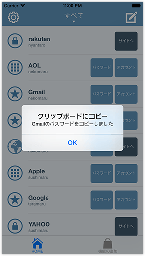
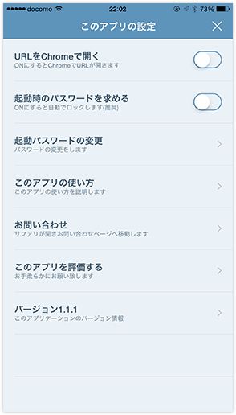
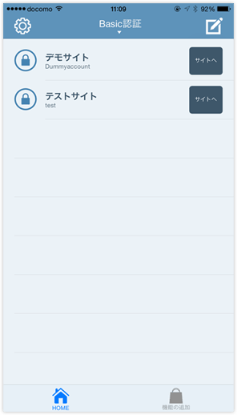

<!DOCTYPE HTML>
<html lang="ja">
<head>
<meta charset="utf-8">
<title>指紋認証で簡単パスワード管理　PassManager (パスマネージャー)</title>
<meta name="viewport" content="width=1000">
<meta name="keywords" content="指紋認証で簡単パスワード,PassManager,パスマネージャー">
<meta name="description" content="指紋認証で簡単パスワード管理　PassManager (パスマネージャー)">
<meta property="og:title" content="指紋認証で簡単パスワード管理　PassManager (パスマネージャー)">
<meta property="og:url" content="http://lab.boy.jp/passmanager/ogp.png">
<meta property="og:image" content="http://lab.boy.jp/passmanager/">
<meta property="og:site_name" content="指紋認証で簡単パスワード管理　PassManager (パスマネージャー)">
<meta property="og:type" content="website">
<meta property="og:description" content="PassManager 指紋認証で簡単に使用できるパスワード管理アプリです。">
<link rel="stylesheet" type="text/css" href="http://yui.yahooapis.com/3.16.0-rc-1/build/cssreset/cssreset-min.css">
<link rel="stylesheet" href="css/local.css" type="text/css" media="all">
<link rel="stylesheet" href="css/common.css" type="text/css" media="all">
<!--[if lt IE 9]>
    <script src="http://html5shim.googlecode.com/svn/trunk/html5.js"></script>
    <![endif]-->
</head>
<body>
<div id="fb-root"></div>
<script>
    setTimeout(function () {
        (function (d, s, id) {
            var js, fjs = d.getElementsByTagName(s)[0];
            if (d.getElementById(id)) return;
            js = d.createElement(s);
            js.id = id;
            js.src = "//connect.facebook.net/ja_JP/sdk.js#xfbml=1&appId=289244224479292&version=v2.0";
            fjs.parentNode.insertBefore(js, fjs);
        }(document, 'script', 'facebook-jssdk'));
    }, 3000);
</script>
<div class="wrap">
	<div class="loading"></div>
	<header>
		<div class="wrapInner">
			<div class="fbBtn">
				<div class="fb-like" data-href="http://lab.boy.jp/passmanager/" data-layout="button_count"
                     data-action="like" data-show-faces="true" data-share="true"></div>
			</div>
			<div id="headerLogo"></div>
			<nav id="headerLink">

				<div class="tw"><a href="https://twitter.com/passManagerJP" target="_blank"></a></div>
				<div class="fb"><a href="https://www.facebook.com/passmanagerjp" title="準備中" target="_blank"></a></div>
				<div class="mail"><a href="http://lab.boy.jp/pass/pass_info.html" target="_blank"></a></div>
			</nav>
		</div>
	</header>
	<section id="area_1">
		<div class="wrapInner">
			<div class="msgTtl">
				<h1></h1>
			</div>
			<div class="msgTtl-p">
				<p class="textLayerAnimation">パスマネージャーは驚くほど使い方がシンプルなパスワード管理アプリです。</p>
				<p class="textLayerAnimation">パスワードをクリップボードにコピーするまでワンボタン。</p>
				<p class="textLayerAnimation">更にアプリ内のWebビューから一発ログイン。</p>
				<p class="textLayerAnimation">手軽にパスワード管理を始めましょう！</p>
			</div>
			<div class="msgTtl-btn">
				<div class="dl"><a
                        href="https://itunes.apple.com/jp/app/zhi-wen-ren-zhengde-jian-danpasuwado/id938502760?mt=8"
                        target="_blank"><span class="hover"><span class="hover-bg-in">アップストアへ</span><span
                        class="hover-bg"></span></span><span>基本機能は</span><br>
					無料今すぐダウンロード</a></div>
				<div class="ligInList btn"><a href="#modal.html"><span class="hover"><span
                        class="hover-bg-in">リストを確認する</span><span
                        class="hover-bg"></span></span><span>サイトの都合上できないものもあります</span><br>
					自動ログインできるサイト</a></div>
			</div>
			<div class="ar"></div>
			<div class="right">
				<div id="y1"></div>
				<div id="y2"></div>
				<div id="youtube"> 
					<!--<iframe width="640" height="360" src="//www.youtube.com/embed/TCXPVWlngW0?rel=0&amp;autoplay=1&amp;iv_load_policy=3&amp;controls=0&amp;showinfo=0" frameborder="0" allowfullscreen=""></iframe>-->
					<iframe width="212" height="377"
                            src="//www.youtube.com/embed/_f1l9_jh9YE?rel=0&amp;autoplay=1&amp;iv_load_policy=3&amp;controls=0&amp;showinfo=0&amp;loop=1"
                            frameborder="0" allowfullscreen></iframe>
				</div>
				<p>for iPhone!</p>
				<div class="kyeVs"></div>
			</div>
		</div>
	</section>
	<section id="area_2">
		<div class="wrapInner">
			<div class="right">
				<h2><span class="sub">次々と出てくるサービスに立ち向かえ</span><br>
					増えすぎたアカウントとパスワード管理の救世主 </h2>
				<p class="p-1em"> 世の中には便利なサービスが次々と出現します。仕事用のアカウント、プライベート用のアカウント、サークル用のアカウントetc...
					正直もう覚えていられません。同じパスワードを使いまわしたりしていませんか？それは非常に危険な行為です。 </p>
				<p>パスマネージャーはPCや他の端末とは連携しません。スマートフォンのみに保存します。サーバーへの保存はしません。将来的にiCloudのみバックアップが可能になる予定です。パスワードを複数の端末に登録することをリスクと考えます。管理はシンプルに。使いやすさをモットーに。</p>
			</div>
			<div class="vs1"></div>
			<div class="vs2"></div>
		</div>
	</section>
	<section id="area_3">
		<div class="wrapInner">
			<div class="clm_1 clearfix">
				<div class="clm_3-p1">
					<h2>起動からワンアクションで使えます</h2>
					<p> クリップボードにコピーするまでワンアクションでたどり着けます。パスワードのボタンを押すと、クリップボードに保存。<br>
						そのまま「サイトへ」のボタンを押すと予め登録したURLにジャンプ。<br>
						クリップボードにコピーしたパスワードをペースト。 </p>
					<div></div>
				</div>
				<div class="clm_3-p1">
					<h2>ChromeでもSafariでも簡単リンク</h2>
					<p>ChromeユーザーでもSafariのユーザーでもスイッチひとつで開くリンクを切り替えることが可能。<br>
						お気に入りのブラウザで登録したリンクを開くことが出来ます。<br>
						現時点で対応のブラウザはSafariとChromeになります。</p>
					<div></div>
				</div>
				<div class="clm_3-p1 last">
					<h2>ベーシック認証もワンボタンでログイン</h2>
					<p> 認証のかかったサイトへいちいちアカウントをコピーし、戻りパスワードをコピーしてログインにストレスを感じることはありませんか？パスマネージャーは、予め登録しておけばワンボタンで認証がかかったサイトへ入ることが出来ます。作業効率も向上。</p>
					<div></div>
				</div>
			</div>
		</div>
	</section>
	
	<!--<section id="area_4">--> 
	<!--<div class="left">--> 
	<!--<div class="inner">--> 
	<!--<h2>ワンボタンでログインしよう</h2>--> 
	
	<!--<p class="p-1em">パスマネージャーの一押し機能は何と言ってもワンボタンでログイン。--> 
	<!--アプリ内のブラウザでワンボタン。<br>--> 
	<!--もういちいちアカウント欄とパスワード欄に入力する必要はありません。--> 
	<!--※一定以上の回数使用は課金が必要です。</p>--> 
	<!--<p>--> 
	<!--入力の様子を動画で体験しましょう。下のボ</p>--> 
	<!--<div class="btn"></div>--> 
	<!--</div>--> 
	<!--</div>--> 
	<!--<div class="wrapInner">--> 
	
	<!--</div>--> 
	<!--</section>-->
	
	<footer>
		<div class="wrapInner">© 2014 PassManager. All rights reserved</div>
	</footer>
</div>
<script src="http://code.jquery.com/jquery-1.10.1.min.js"></script> 
<script src="http://cdnjs.cloudflare.com/ajax/libs/jquery-easing/1.3/jquery.easing.min.js"></script> 
<script src="js/imagesloaded.pkgd.min.js"></script> 
<script src="js/jquery.transit.min.js"></script> 
<script src="js/text.layer.animation.js"></script> 
<script src="js/smooth.modal.js"></script> 
<script src="js/common.js"></script>
</body>
</html>